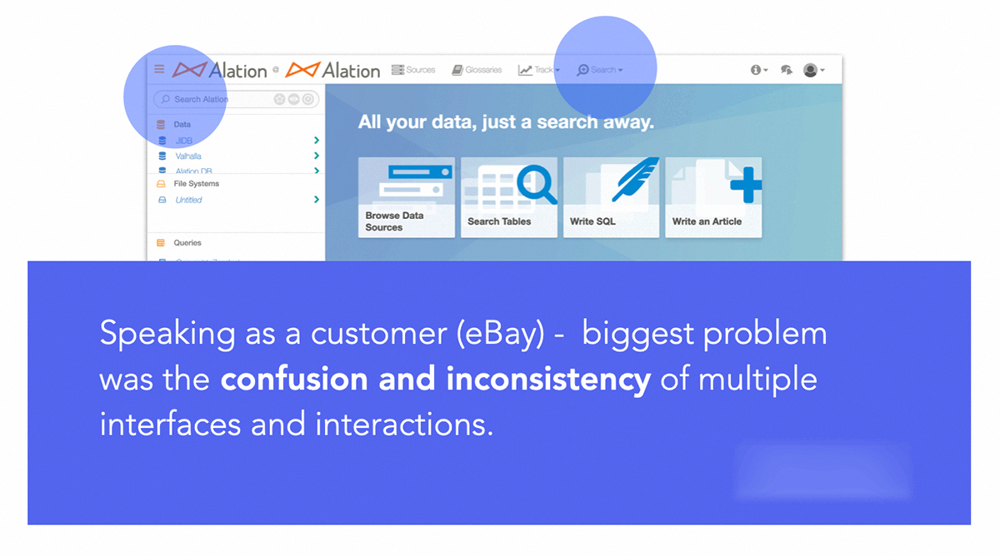
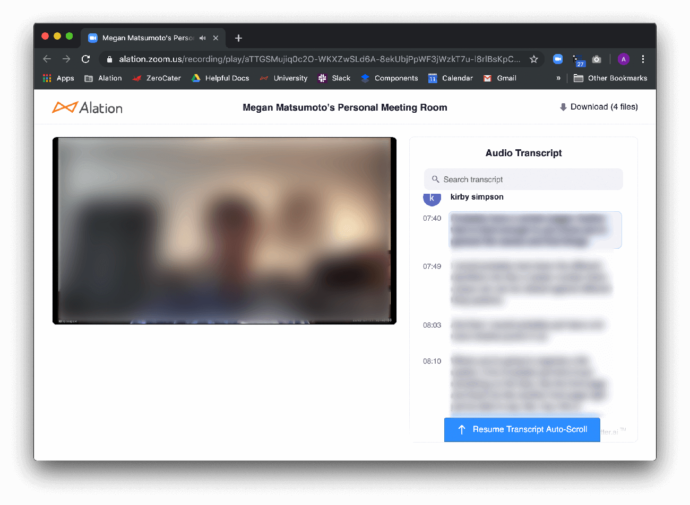
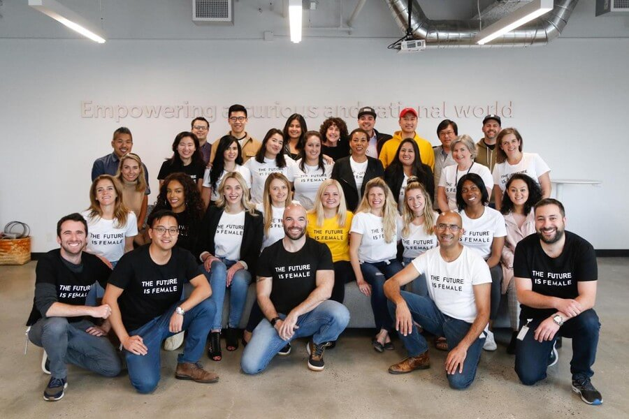

Search results redesign for Alation
Alation reduces time-to-insight for customers like American Express, Twitter, and Pfizer through a self-service solution where data analysts can more efficiently find, understand, and trust their data.
As the designer on the project, I was given ownership of the research, exploration, and design of the search results, while my partner Megan Matsumoto, led the research, exploration, and design of the search paradigm and filters. As a team with no dedicated UX researchers, we also led our own user research sessions.
8 weeks
Search is the first point of contact many users have with the product. Through our Client Success Managers, we heard that not only was there confusion with the inconsistency of the search experience, it also was challenging to use for less-technical users.
There was a lot of buy-in from executives to do a thorough redesign of the search experience because it would support expanding the product so that less-technical users can get value from it, thus supporting the OKR of expanding licensed seats. So the product design team kicked off the ambitious project to reimagine the whole search experience, from how search lives within the data catalog interface to how search results are displayed to how users filter results.
User need: Data users want to use search to either find an exact object they know exists, or to browse for objects that relate to an area they are investigating.
Megan and I started with a set of exploratory studies to understand what people felt about search:
Because our redesign targets people who were differ from our existing customer base, Megan and I enlisted Respondent to find people who could match this profile. Megan set up the Respondent and filtered for people who regularly use data to make business decisions and use tools like Excel but not SQL.
Megan and I created a script for the study, and I took turns with Megan to lead these 45-minute long sessions. Part of the session was dedicated for them to try our existing search to see what issues arise.
With the breadth of the questions in mind, I explored several different ways to present the possible patient answers in an interactive manner, each with benefits and drawbacks. The goal of this exploration is for everyone on the team to be able to grasp the tradeoffs of these vastly different paradigms, both in engineering and how they fit into the medical team workflow.
This initial exploration prioritizes both skimming and in-depth exploration of search results via an accordion paradigm. I also explored subtly coloring a search result to denote object type.
One of the ideas I took from the initial exploration is that each search result can be displayed on a spectrum from quite minimally to quite in-depth. I did initial design exploration around the three levels of information detail for the most commonly searched for objects. This allowed Megan and I to see how space efficiency is balanced with showing enough detail to help people understand an object.
The three levels of detail were based on a lot of assumption. In order to understand what users actually want when scanning search results, I met with users to play the dollar game.
I designed 'ultimate result cards' for several object types stuffed with every searchable attribute imaginable. Then I asked users, "Imagine I give you $10 to spend on all the pieces of information in this result card, how would you spend it?"
After running these tests with multiple internal users, both technical and non-technical, I was able to find some general patterns on how information should be prioritized.
Through my testing with internal users, I also received unsolicited feedback on how information should be placed spatially, which pointed me to thinking harder about how the information should be grouped and placed within the result card.
Through several rounds of testing, I found that while a large object type icon was good for learnability, it overwhelmed the information hierarchy and thus reduced efficiency in browsing the results. Instead, I found that users really understood objects when they are represented with the object's salient characteristics. For example, a table is more easily recognized as a table when users are able to recognize the column structure.
This new table preview component not only made the popular table object more tangible to new users, but it allowed an added layer of depth in seeing if the table would be helpful. This new component went through several rounds of iteration to find the most efficient display and to round out edge cases like tables with thousands of columns.
Megan and I periodically combined our work into a clickable prototype to test with users. Thus our projects moved in tandem. Toward the end of the project and the end of my internship, I documented the functionality of interactive elements of the search results and the table preview. We also thought about metrics by which we would evaluate the success of our designs.
With 2 months of iterating and testing, we imagined and specced a search that not only was easier to approach for our new customers but also improved the value of the data catalog to power users. As this feature is rolled out, the team is closely tracking task success rate, engagement, and NPS to find places for further improvement.
Through this project, Megan and I were able to solve customer pain points and expand Alation to a new set of less-technical users, allowing Alation to expand its market. By taking ownership of the design of the search results, I helped the product design team meet the tight deadlines and accelerated the engineering team's ability to estimate and plan the next quarter.